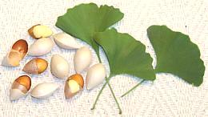

SAFARI
Users
Ginkgo
- [Ginkgo biloba] This non-flowering tree, possibly with a seed fern ancestor in common with cycads, has been with us for at least 250 million years. It became very widespread in the Jurassic, 201 million years ago, but started to decline during the Cretaceous. While remarkably enduring, it evolved very slowly and was largely displaced by the rapidly evolving offspring of the flowering magnolia. Finally, only a remnant population remained in China, but it has now been planted worldwide as a popular decorative. Only male trees are planted in most places because the fruit contains butanoic acid, which smells like very rancid butter. In China, female trees are widely cultivated for the seeds, sold here as "White Nut" in Asian markets.
Dietary supplements made from extract of ginkgo leaves are thought by some to improve memory but this is controversial. The supplements are approved for treatment of tinnitus (ringing in the ears) in Germany. I took them for that purpose when I contracted that problem from a certain brand of Australian red wine. I'm not sure if they helped or the problem went away on its own. What is known is that ginkgo improves circulation in small blood vessels, reduces clotting and contains strong antioxidants.
The seeds are used in a number of Asian dishes and highly esteemed
there, but should not be eaten by themselves in quantity over a long
period of time, because they cause poisoning by MPN (4-methoxypyridoxine).
In the quantities called for by recipes, and with the frequency such
recipes are likely to be used, they are perfectly safe.
Cycads
- [order Cycadales]Cycads were pioneer land plants, originating about 300 million years ago (give or take about 25 million), though most living species evolved within the last 12 million years or so. Most species are slow growing and can live for more than 1000 years. They are much liked in landscaping because they are attractive, require very little water, and will not soon outgrow their location. they also work well as potted plants.
Cycads are quite toxic, laced with a strong neurotoxin, but that hasn't stopped people from eating them. Eating whole seeds will cause extreme vomiting, discomfort and possibly death, or at least wishing you were dead. They are prepared by drying or long soaking to reduce the toxins, then ground into flour. Cycad meal (Eenthu) is particularly used in Kerala, India. It's long storage life makes it a popular food during the rainy season. Cycad has been used in Okinawa as a famine food, particularly during "cycad hell", caused by Japanese mismanagement in the 1920s.
the trunk cores of some species are filled with high quality starch,
which has been used by natives of Australia and the South Pacific
islands. The starch is usually washed and fermented some before use, but
still may eventually result in a neurological condition similar to
Parkinson's disease. Commercial starch, similar to tapioca starch and
called "sago" is thoroughly washed and detoxified. "Sago" is also made
from the core pith starch of certain palms, which are unrelated to
cycads.
Photo by Lazaregagnidze distributed under license Creative
Commons
Attribution-ShareAlike v3.0 Unported.
Gnetophyta
This is a Division of non-flowering plants is of highly uncertain relationship to other plants. Some consider them closer to flowering plants than any other non-flowering group, but this is disputed by others. Gnetophytes may have originated over 200 million years ago, but are well testified in the early Cretaceous, around 140 million years ago. They were a diverse and plentiful plant group into the early Cenozoic, around 50 million years ago, but were almost wiped out by the rapidly diversifying flowering plants. Today there are only three rather strange remnant genera, surviving through adaption to very harsh environments.
Ephedra- [Mormon tea, Brigham tea, joint-pine, jointfir; Ma-huang (China); genus Ephedra (about 71 species)]Ephedras are the best known of the Gnetophyta, being widely used medicinal plants through their native range. they are native to the U.S. Southwest, the Mediterranean region, Central Asia (to the Pacific in northern China), and on the west coast of South America. They are adapted to harsh, bright, sandy environments, often along the coast. Their growth habit is a dense array of jointed twigs, with tiny leaves at the joints. Small male and female cones are also attached at the joints for production of seeds. The only culinary use of this plant is in teas, particularly
Mormon tea from the U.S. Southwest, but also in other regions.
Mongolian tea combines dried mature seed-cones of Ephedra
monosperma with white tea or herbs, taken without milk. In the
United States, ephedra products are banned due to a range of serious
side effects.
Photo by Photohound distributed under license Creative
Commons
Attribution-ShareAlike v3.0 Unported.
Gnetum- [genus Gnetum (about 41 species)]Gnetums are native to Southeast Asia, including the Philippines, and north into southern China. They are also native to much of coastal India, West Central Africa, and northern South America as far north as Panama. Most species are lianas or vines, but two in Asia are trees. The fruits of most are edible, or the seeds are, anyway. The fruit consists of little more than skin over the seed. Leaves are also eaten as a vegetable. Here we will treat the two most widely used as food. Gnetum gnemon:[Melinjo (Indonesia)]
This small tree produces red fruits containing seeds ranging between
3/4 and 1-1/2 inches long (photo to left). Both seeds and leaves are
used widely in Indonesian cuisine, the seeds particularly in sour
soups (sayur asem) and the leaves in vegetable curries such as kuah
pliek. The seeds are also pounded and formed into thin wafers, to be
deep fried and served as crackers (emping).
Photo of Gnetum gnemon by Gbohne distributed
under license Creative Commons
Attribution-ShareAlike v2.0 Generic.
Gnetum africanum:[African Jointfir, Wild Spinach; Eru, Okok, M'fumbua, Fumbua (Camaroon); KoKo (Angola, Gabon, Central African Republic, Congo); Ukase, Afang, M'fumbwa, Fumbwa (Nigeria, Democratic Republic of Congo)]
This wild vine is native to humid zones of West Central Africa, and
prefers to grow in the shade under trees, but does not like swampy
areas. It produces red fruit about 1/2 inch long consisting of a thin
skin over a seed (same appearance as Gnetum gnemonshown above).
It is commonly sold in markets as leaves, either whole or chopped.
They are gathered in the wild by rural women, traditionally by
uprooting the vine. The women are now being encouraged to harvest
leaves in a more sustainable way, and to start cultivating it. While
the seeds can be cooked and eaten, the leaves are the primary crop
in Africa. They are high in protein and other nutrients, and are
used in various soups and stews, or eaten raw.
Photo by T.K. Naliaka distributed under license Creative
Commons
Attribution-ShareAlike v4.0 International
Welwitschia[Welwitschia mirabilis] This plant is actually not edible, except by zebras, rhinos, and the like. I've included it here because it's the sole member of the third surviving family of Gnetophyta - and because it is so outrageously weird. It is found only in the West African coastal desert of southern Angola and northern Namibia, a region that gets less than 4 inches of rainfall a year. The seeds sprout, unfolding two cotyledon (embryonic leaves).
It then sends out two very wide adult leaves at right angles to the
cotyledons. These two leaves, and no others, continue to grow for
the life of the plant, which may be up to 2000 years. They are
generally tattered into ribbons by the wind. Upon these leaves
sprouting, the central growing point of the plant dies and is scabbed
over, so it never gets much taller. It then produces male or female
cones (one sex per plant) on thin stems around the central scab.
Unfortunately, most of the seeds it produces never sprout because
they are attacked by a fungus. Cultivation is generally from seeds
acquired from a botanical garden or the like.
Photo by Hans Hillewaert distributed under license
Creative Commons
Attribution-ShareAlike v4.0 International, attribution required
.
|